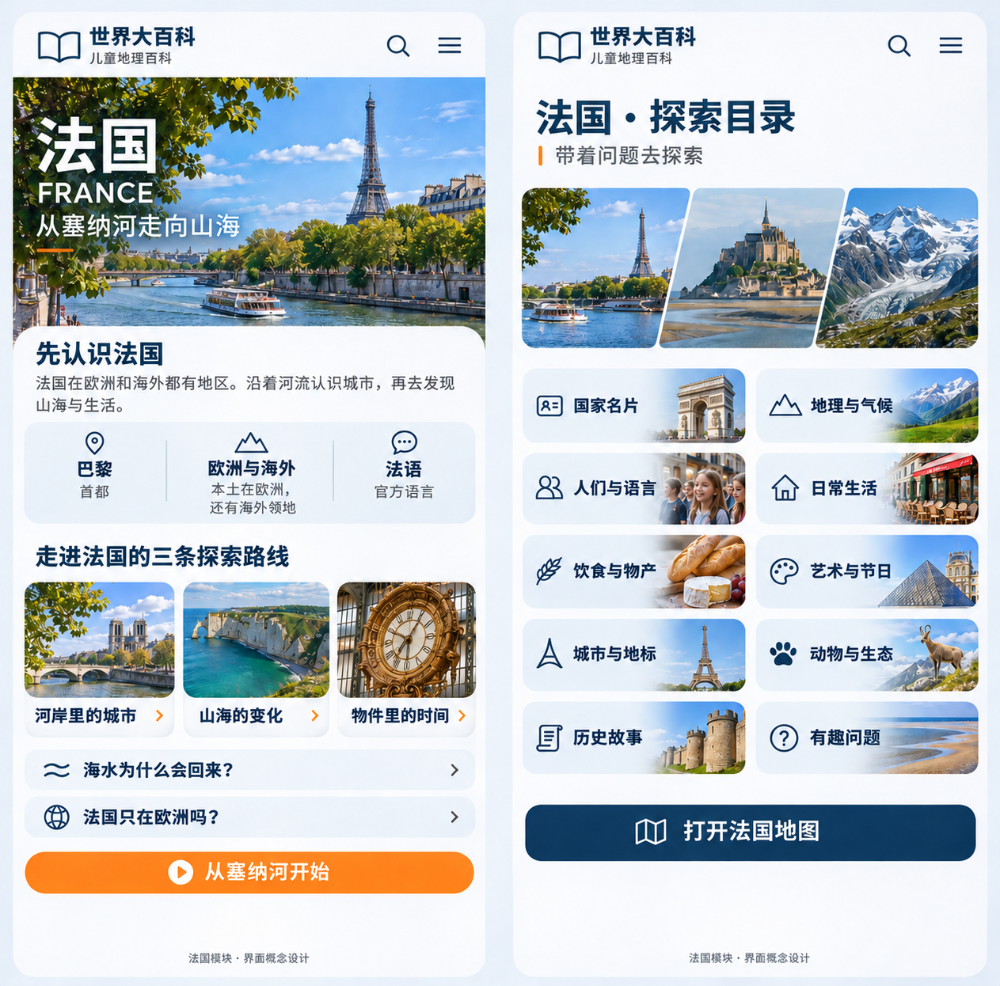
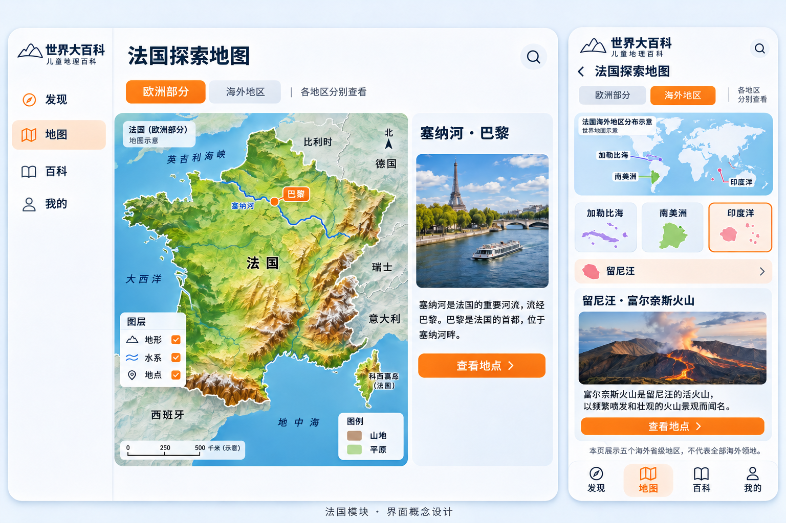
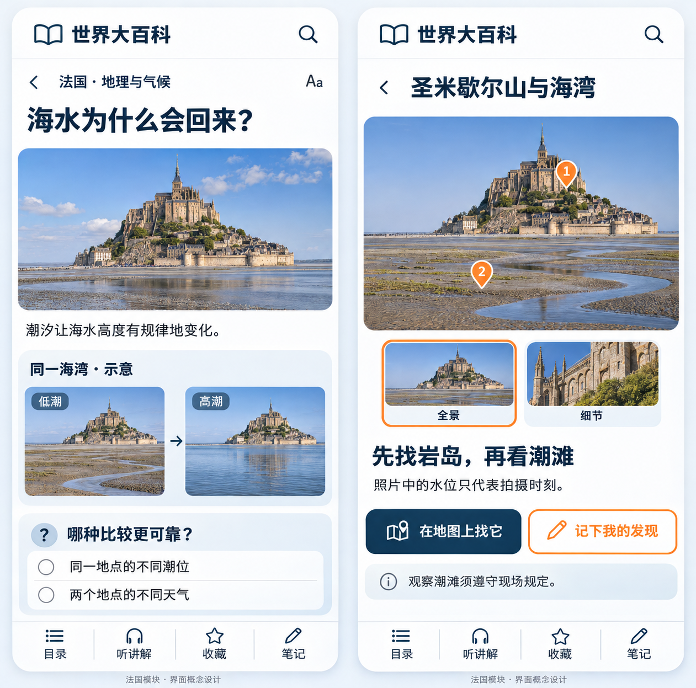
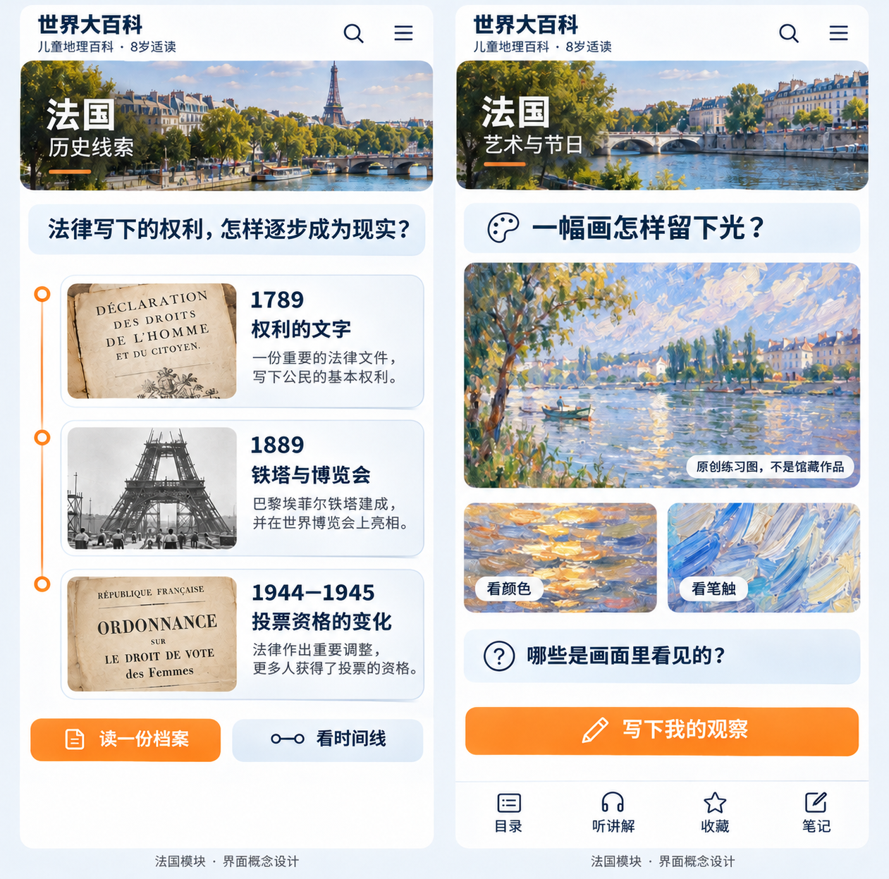
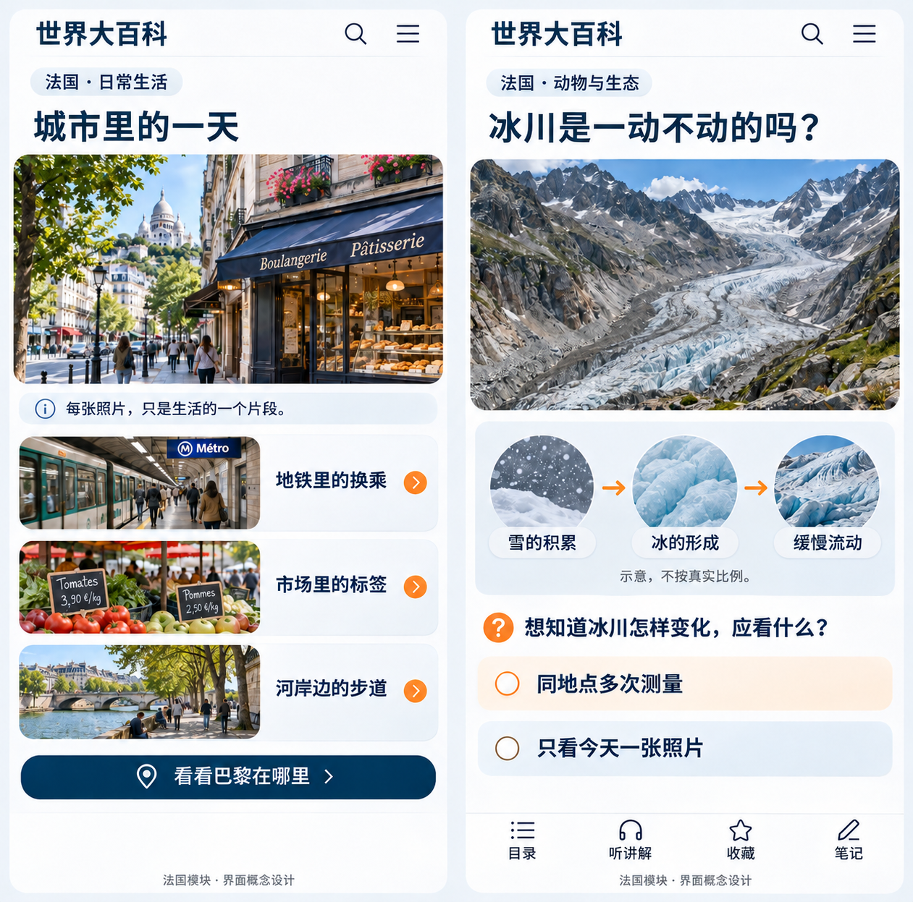
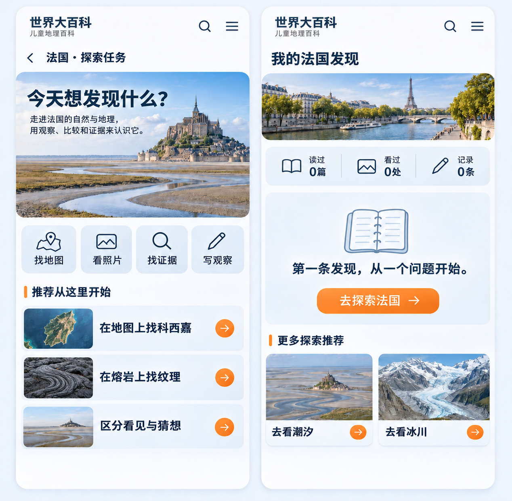
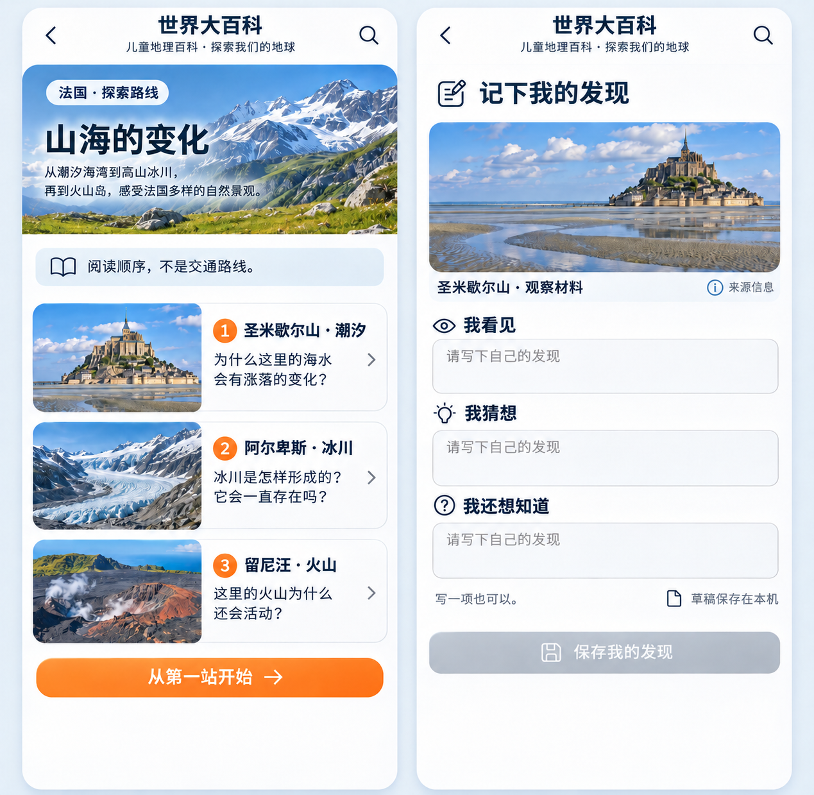

01 / 法国概览与探索目录
以河岸照片建立第一印象，从三条路线或十个栏目开始探索。

02 / 从欧洲部分切换到海外地区
平板地图与手机海外入口。各地区独立显示比例尺，世界定位帮助理解相互位置。

03 / 海水为什么会回来？
同视角潮汐示意、照片热点与地点观察，让阅读连接地图与自己的发现。

04 / 在档案与画面里寻找线索
从历史文件看变化，从颜色与笔触练习观察；原创练习图不冒充馆藏真作。

05 / 城市日常与缓慢流动的冰川
把街道、市场与自然变化都写成孩子能追问的问题。

06 / 探索任务与我的法国发现
找地图、看照片、找证据、写观察。第一次打开时，进度从真实的零开始。

07 / 一条阅读路线，一份自己的记录
潮汐、冰川、火山组成阅读顺序。笔记可只写一项，空白时保存按钮禁用。
